Tür: Fantezi, Macera
Bölüm: 38 (S2 Devam Ediyor)
Puan: 9.3/10
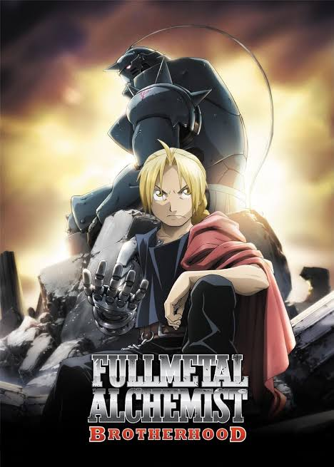
Tür: Aksiyon, Macera
Bölüm: 64
Puan: 9.1/10
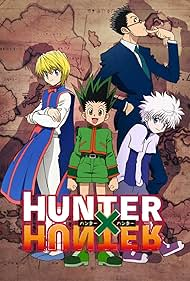
Tür: Aksiyon, Macera
Bölüm: 148
Puan: 9.04/10
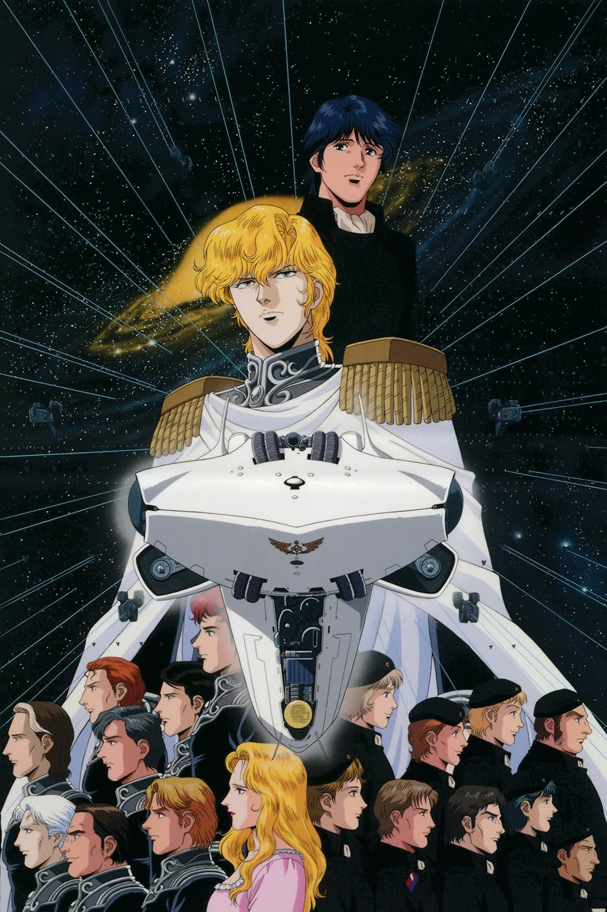
Tür: Bilim Kurgu, Drama
Bölüm: 110
Puan: 9.02/10
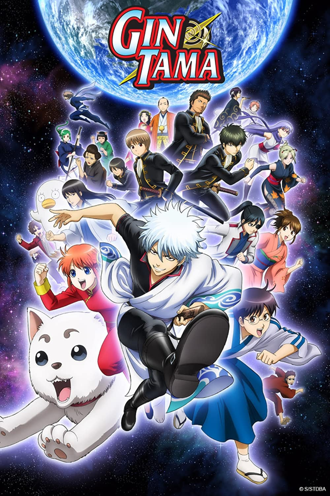
Tür: Komedi, Aksiyon
Bölüm: 367
Puan: 8.87/10
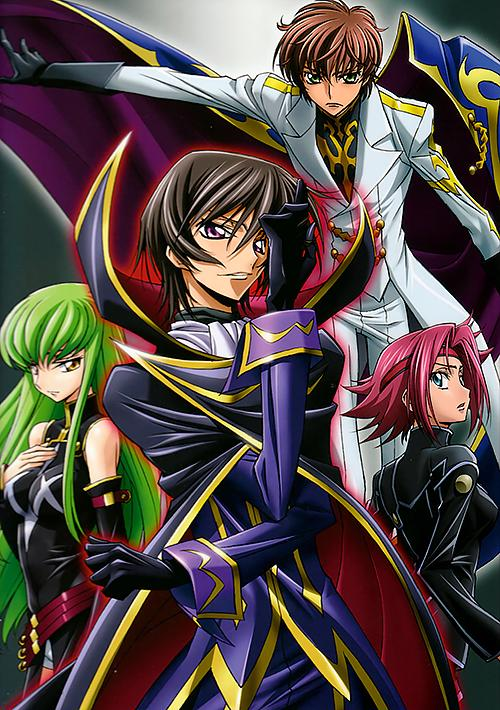
Tür: Mecha, Aksiyon
Bölüm: 50
Puan: 8.81/10
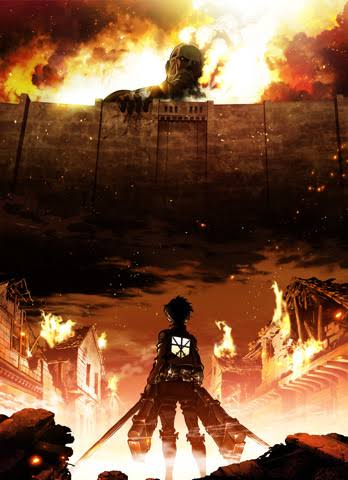
Tür: Aksiyon, Drama
Bölüm: 94
Puan: 8.78/10
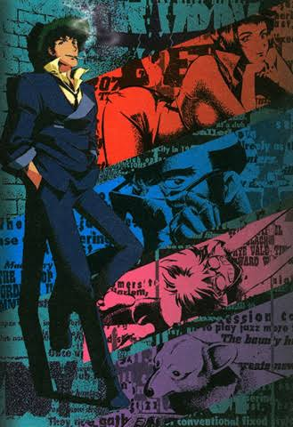
Tür: Bilim Kurgu, Macera
Bölüm: 26
Puan: 8.75/10

Tür: Doğaüstü, Macera
Bölüm: 46
Puan: 8.75/10
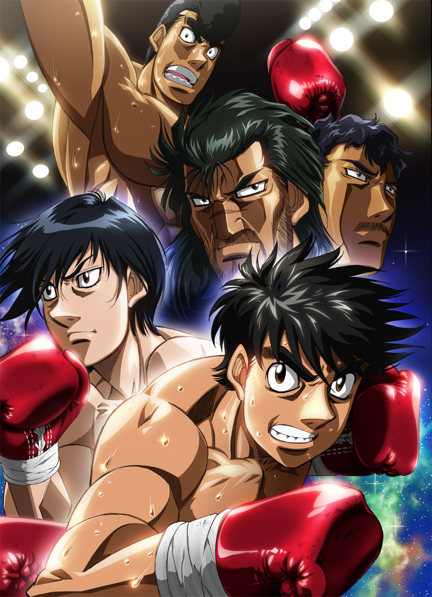
Tür: Spor, Komedi
Bölüm: 126
Puan: 8.75/10

Tür: Tarihi, Aksiyon
Bölüm: 48
Puan: 8.72/10

Tür: Gerilim, Drama
Bölüm: 74
Puan: 8.71/10

Tür: Aksiyon, Macera
Bölüm: 1150+
Puan: 8.70/10

Tür: Komedi, Drama
Bölüm: 43
Puan: 8.69/10
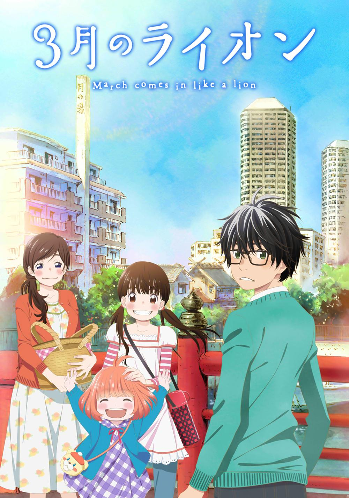
Tür: Drama, Slice of Life
Bölüm: 44
Puan: 8.66/10
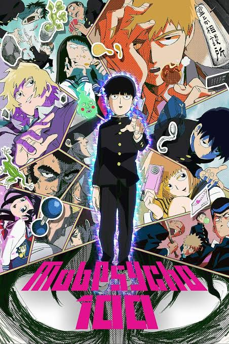
Tür: Aksiyon, Komedi
Bölüm: 37
Puan: 8.63/10
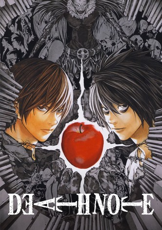
Tür: Gerilim, Psikoloji
Bölüm: 37
Puan: 8.62/10

Tür: Bilim Kurgu, Gerilim
Bölüm: 47
Puan: 8.60/10

Tür: Spor, Komedi
Bölüm: 101
Puan: 8.55/10
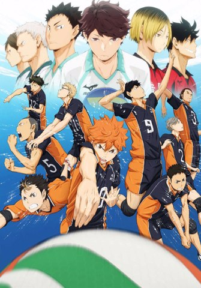
Tür: Spor, Drama
Bölüm: 85
Puan: 8.55/10